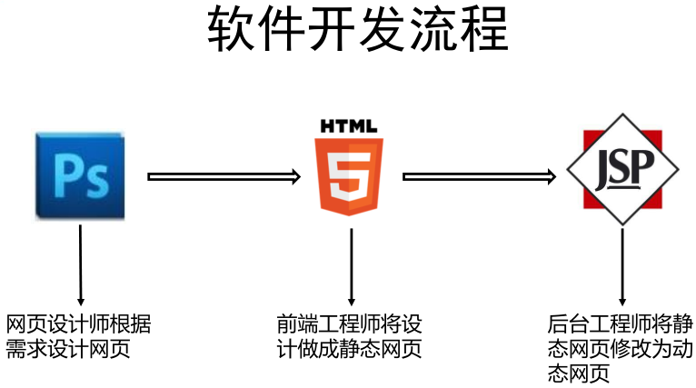
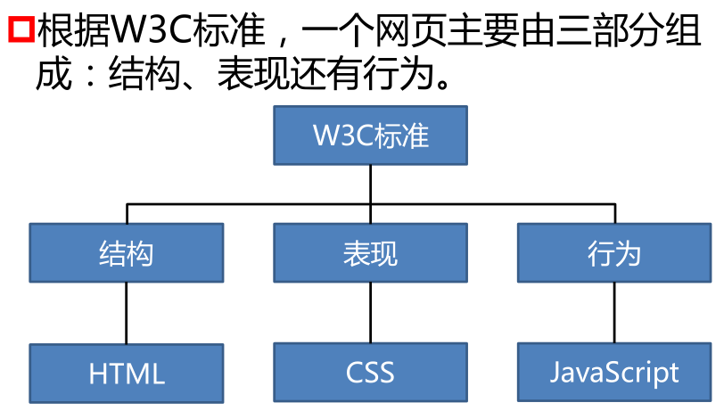

软件开发，一提起来感觉这个感觉这个词范围很大很广，说起来也很笼统。不知所云，开发的到底是什么？或者说开发的具体内容是什么？以前我们讲软件开发主要是分前端和后端，那前端和后端又是什么那？你可以这么通俗的理解，前端就是用户可以看到的界面，而后端就是客户看不到的模块。现在我们已经摒弃了这种说法，因为这种说法太过笼统，太过局限性。所以我们现在将软件开发分为B/S和C/S。
首先我们先讲讲什么是C/S。C/S （Client/Server，客户机/服务器）模式又称C/S结构，是软件系统体系结构的一种。C/S模式简单地讲就是基于企业内部网络的应用系统。与B/S（Browser/Server，浏览器/服务器）模式相比，C/S模式的应用系统最大的好处是不依赖企业外网环境，即无论企业是否能够上网，都不影响应用。现在C/S结构的软件比如说有：QQ、360、office等等。那么C/S是不是就优于B/S了那？答案是否定的。现在大部分互联网公司开发的主要方向还是C/S。因为C/S架构的软件客户端不能跨平台使用，所以在其他操作系统上都需要分别开发相对应的客户端。这样就会造成B/S开发的成本远远高于C/S，而且C/S的后期维护以及人工费用也远远高于B/S开发。
B/S结构（Browser/Server结构）结构即浏览器和服务器结构。它是随着Internet技术的兴起，对C/S结构的一种变化或者改进的结构。在这种结构下，用户工作界面是通过WWW浏览器来实现，极少部分事务逻辑在前端（Browser）实现，但是主要事务逻辑在服务器端（Server）实现，形成所谓三层3-tier结构。B/S相较于C/S，是使用浏览器访问网页的形式来使用软件。软件不需要安装客户端，直接浏览器访问指定网址即可。软件更新的时候，客户端不需要更新。但是B/S架构的软件，客户端和服务器之间通信采用的是通用的HTTP协议，相对来说不安全。使用B/S架构开发的软件有京东、淘宝、12306、知乎、新浪微博。
我们已经了解了B/S和C/S结构，那么我们说一下开发流程：
那么相应的我们需要学习哪些内容那？

通俗的讲，结构就好比人的骨架，描述HTML页面的结构。而表现就好比我们的衣服皮肤等外在的东西，我们用CSS控制页面中元素的样式。既然有了衣服和骨架，那么人就需要会说话，做出行动，所以JAVAScript用于相应用户操作。